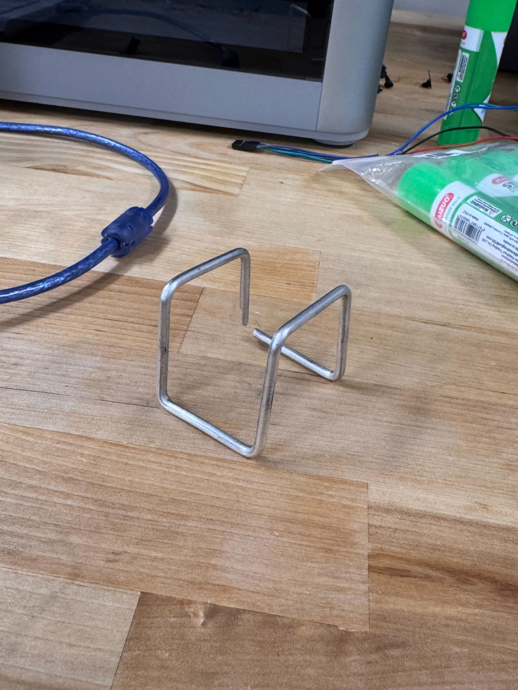

WireBend-Kit — Contact-Detection Feedback
Three pieces of work on WireBend-Kit at the UW Programmable Matter Lab: contact-detection feedback that improved bend accuracy by 40%, a manual-to-software conversion of the wire chuck that eliminated slippage, and an in-progress G-code reversal pass that unbends finished wireframes back into reusable straight stock.
The lab and the machine
WireBend-Kit is a research machine at the UW Programmable Matter Lab (advisor: Prof. Martin Nisser) that automatically bends wire into 3D wireframe shapes from a digital design. A user supplies a sequence of bend operations as G-code, and the machine actuates the wire through a series of forming passes.
I joined the project as an undergraduate researcher in January 2026. The machine worked, but every real-world non-ideality quietly turned into error in the final geometry — small positional inaccuracies, slipping wire, accumulating drift across a sequence. My contributions have all been in service of one goal: making WireBend-Kit reliable enough to actually fabricate things with.

Contact-detection feedback (40% accuracy improvement)
The original machine ran open-loop: it issued bend commands based on a fixed kinematic model and trusted that the output matched the request. That works on paper but the physical system disagrees — wire diameter varies, work-hardening shifts springback as a sequence progresses, and small positioning errors compound.
Rather than try to model all of that, I added a much simpler signal: a contact-detection feedback path. The wire itself becomes a circuit element — held at ground — and a reference peg is held at logic high through a pull-up resistor. When the bending arm drives the wire into contact with the peg, the pull-up gets pulled down, and the firmware sees a clean digital edge at the moment of contact.
That edge is the ground truth the machine was missing. Instead of opening the loop and hoping the kinematic model is right, the firmware now drives toward the reference and stops on contact — cancelling out small positioning errors, inconsistencies in wire diameter, and most of the springback effects in one shot. End-to-end bend accuracy improved by 40%.
The implementation detail that took the most iteration was electrical: the wire is a long, thin conductor running through a machine full of motor drivers. Without proper layout and a dedicated current-limited path to ground, contact detection would either trigger on motor noise or miss the actual contact edge. Once the routing was clean and the pull-up was sized properly for the parasitic capacitance, the signal became rock-solid.
Software-controlled wire chuck
The wire chuck — the clamp that holds the wire stationary during a bend — used to be operated by hand. An operator tightened it before each bend and loosened it before each feed motion. It worked, but it introduced two problems: an inherent rate limit (the operator had to be physically there for every bend), and a reliability problem when the operator forgot to re-tighten or under-tightened, causing the wire to slip mid-bend and corrupt the rest of the sequence.
I converted the chuck into a software-controlled clamp that automatically engages at the start of each bend and releases before the next feed, all driven from the same firmware that schedules bend operations. From the operator's perspective the chuck simply ceases to exist as a manual step; from the machine's perspective, slippage as a failure mode is gone. That alone removed a whole class of mid-sequence errors that used to compound through the rest of a part.
G-code reversal — material reuse (in progress)
Wireframe research is iterative — you bend a part, you measure it, you tweak the design, you bend the next one. That's a lot of wire ending up in the scrap bin. The current piece of work on my plate is a G-code reversal pass: take a finished bent wireframe, generate the inverse sequence, and have the machine unbend it back into straight stock.
The core of it is reversing the G-code in time and inverting each bend's sign. The interesting part is what happens at the edges of that idea: the wire has been work-hardened by the original sequence, so the unbend has different springback characteristics than the bend did, and a naive reversal leaves the wire visibly bowed. I'm working through how much of that can be solved with the same contact-detection feedback used on the forward pass and how much requires explicit characterization of the work-hardening curve.
When it works, every wireframe becomes a recoverable asset rather than a one-shot consumption of stock — which matters for both research iteration speed and material cost.
Tooling and workflow
Day-to-day the machine is driven from a Python host that talks to the on-board firmware. I rebuilt parts of the host script to make iteration faster: a single-bend test mode that lets me trigger an individual operation without composing a whole sequence, plus a live readout of the contact-detection signal so I can verify the feedback path is working before each new part. Bring-up of every new feature has been hardware-in-the- loop on the actual machine — there's no reference implementation or simulator for a one-of-a-kind research rig, which makes good bench tooling worth a lot.
Why this work matters to me
Programmable matter sits exactly at the intersection of firmware, physical systems, and a research goal that will only work if someone makes the underlying hardware reliable. WireBend-Kit taught me to treat sensing as the first move rather than the last — the contact-detection scheme is a simpler, more accurate system than any of the kinematic-modeling alternatives I considered, and it generalizes. I'd love to keep working in labs where the bottleneck between an idea and a result is the control system holding it together.